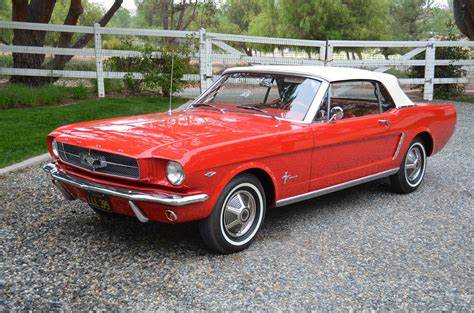

Historia del Ford Mustang
Su enfoque y objetivo
Desde su concepción, el Ford Mustang fue creado para llenar un vacío en el mercado automotriz estadounidense: ofrecer un automóvil deportivo, asequible y versátil que capturara la emoción de los modelos de lujo pero a un precio accesible. La visión de Lee Iacocca y su equipo en Ford era clara: diseñar un coche que permitiera a la juventud de la época experimentar la libertad y el espíritu deportivo sin renunciar a la funcionalidad y a la posibilidad de personalización. Este enfoque estratégico permitió al Mustang destacarse como el primer "pony car", un vehículo compacto y asequible, pero con un toque deportivo que resonó de inmediato en el público joven.
El Mustang fue diseñado con una flexibilidad única para su época, ofreciendo una amplia gama de opciones de personalización que incluían motores, transmisiones y detalles de acabado que permitían a cada cliente adaptar el vehículo a su gusto y necesidades. Este enfoque democratizó la idea de un coche deportivo, haciéndolo accesible a sectores más amplios de la sociedad y marcando un hito en la industria. La estrategia fue tan efectiva que el Mustang no solo creó una nueva categoría de vehículos, sino que también se convirtió en un símbolo de individualidad y libertad.
Crecimiento y su popularidad
El Ford Mustang experimentó un crecimiento explosivo desde su lanzamiento en 1964. La expectativa inicial de ventas era de alrededor de 100,000 unidades en su primer año, pero el éxito fue tan abrumador que, en solo 18 meses, Ford había vendido más de 680,000 Mustangs. Para 1966, el número de unidades vendidas ya superaba el millón, estableciendo un récord sin precedentes en la industria automotriz y catapultando al Mustang como un fenómeno cultural. Este increíble éxito fue el resultado de una estrategia de marketing efectiva y una conexión emocional profunda con los consumidores, quienes encontraron en el Mustang una forma de expresar su identidad y libertad.
La popularidad del Mustang también generó una reacción en cadena en el mercado, motivando a otros fabricantes a desarrollar sus propios modelos deportivos de bajo costo, como el Chevrolet Camaro y el Plymouth Barracuda. Este fenómeno marcó el inicio de la era de los "pony cars" en Estados Unidos, donde los automóviles compactos y deportivos se convirtieron en una nueva norma. La demanda fue tan alta que Ford tuvo que adaptar su línea de producción para satisfacer el interés masivo, ampliando las plantas de ensamblaje y dedicando recursos exclusivamente al Mustang. Este modelo se convirtió no solo en un automóvil, sino en un ícono del estilo de vida americano, definido por la libertad y la velocidad.
Primer Ford Mustang y su salida al mercado
El primer Ford Mustang salió al mercado el 17 de abril de 1964 y fue presentado en la Feria Mundial de Nueva York, sorprendiendo al mundo automotriz. A este modelo, lanzado antes del inicio oficial del año de producción, se le conoció como el "Mustang 1964½". Su precio base, de aproximadamente $2,368, lo hizo sumamente atractivo para jóvenes y familias que buscaban un coche deportivo accesible. La estrategia de Ford fue ofrecer un vehículo con opciones de personalización, permitiendo a los clientes elegir entre varias configuraciones de motor, transmisión y acabados interiores. Entre sus motores más populares estaban un V6 de 170 pulgadas cúbicas y un V8 de 260 pulgadas cúbicas, lo que permitía a los compradores seleccionar el nivel de potencia adecuado a sus necesidades.
El Mustang fue recibido con entusiasmo y marcó el inicio de una nueva categoría de vehículos en la industria, los "pony cars", que combinaban una apariencia deportiva con precios accesibles. Las unidades se agotaron rápidamente en los concesionarios, y la demanda superó cualquier expectativa. Gracias a su diseño innovador, su adaptabilidad y el impacto cultural que generó, el Mustang 1964½ se estableció como una leyenda y cimentó su lugar en la historia automotriz, marcando el comienzo de una línea de vehículos que continúa siendo emblemática hasta hoy.
